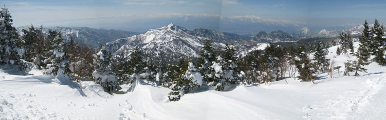
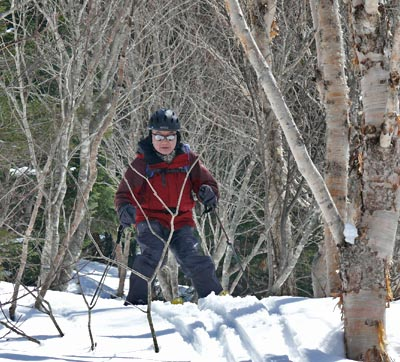

|
|||||||||||||||||||||||||||
|
|||||||||||||||||||||||||||
|
２００９年 春の全国集会 （志賀高原） |
| 開 催 日 | ２００９年４月３〜５日 | |||
| リーダー | 松澤、安井、０９年幹事団 | |||
| 報 告 者 | 野口、中川、佐藤、岡田、田邊、西田 | |||
| HP制作者 | 西田 | |||
| 参加者数 | ４７名 | |||
| アルパイン・スキー・クラブの春の全国集会は、当クラブの年間最大の行事である。今年は、志賀高原・熊の湯温泉に平均年齢６７歳の仲間４７名が集結し、４月４日にオプション行事として 「横手〜草津ツアー」 が、４月５日にはメイン行事として 「裏岩菅山ツアー」 と 「志賀高原ゲレンデ・ツアー」が行われた。 |
| １日目 ４月３日（金） 前日着・フリー滑走 |
| 車、夜行バス、JRなど思い思いの交通手段で到着したこの日は、到着順に小グループに分かれてゲレンデで足慣らしをした。 |
| A | ||
| 熊の湯温泉にある宿舎のホテル一望閣 |
寺子屋スキー場の最上部から、 明後日登る裏岩菅山（中央）と岩菅山（右）が見えた |
|  |
| フリー滑走では、横手山、一ノ瀬、寺子屋、オリンピック大回転コースなどを滑る。 写真は横手山山頂からのパノラマ |
| ２日目 ４月４日（土） オプション・横手〜草津ツアー |
| 山スキーのクラシックルートとして有名な「横手山〜草津ツアー」は、登りがほとんど なく、緩斜面の滑りが続くツアー入門コースである。 難点は通り抜けコースのため 戻る場合には交通手段が必要となることである。 今回は、幹事の手配よろしく、 ３８人が天候に恵まれたツアーを楽しんだ。 |
| A | ||
| ホテルロビーで出発前のブリーフィング | 各班で出発前の集合写真（これはC班） |
| A | ||
| ホテルからリフト乗り場に向うとき前山スキー場が見える。 ここは以前、雪崩で死者が出て訴訟になったところ。★ |
始発の横手山リフトに乗り、 ３つ乗り継いで横手山の頂上に向う |
| ★１９９６年に前山スキー場で表層雪崩が起き、３名が巻き込まれ、大学教授１名が死亡した。 ところが、遺族がスキー場とその時一緒にいた仲間に損害賠償請求を行った。
２００１年に 長野地方裁判所は遺族の請求を棄却した。 禁止コースを滑るのは自己責任であるという。 |
| A | ||
| リフトから頚城山群が見える | 横手山頂上の無線塔 |
| 横手山から見る苗場山は立派だ |
| A |  |
|
| 横手山から渋峠へ滑り出す | 渋峠ホテルは群馬県と長野県の県境にある |
| A | ||
| ホテルのフロントに登山届を提出する。 ホテルの標高は２１５２ｍだが、近くにある標高２１７２ｍ の国道最高地点の到達証明書を発行している。 |
ホテル前を出発する際に、一人ずつリーダーの前を 通過して、雪崩ビーコンのチェックを受ける |
| A | ||
| 林道に沿って緩やかな斜面を滑る | やがて、芳ヶ平ヒュッテの三角形の赤い屋根が見えた |
| 芳ヶ平ヒュッテ前で集合写真を撮る |
 |
A | |
| 芳ヶ平ヒュッテを振り返りながら、先を急ぐ | 大沢川の橋を渡り、少し登ると大斜面に出る |
| A | A | |||
| 雪が切れて板を担ぐところが３箇所 あったが、この時期としてはまずまず |
白根・芳ヶ平方面遊歩道入口まで滑り込んでフィナーレ。天狗スキー場まで歩いて迎えの車を待つ。 | 靴がお揃い |
|
|
|
| 上の画像をクリックすると、ツアーのビデオをご覧になれます |
| 熊の湯から白根・芳ヶ平方面遊歩道入口までのGPSトラック スクロールしてご覧下さい |
| 宮本代表の乾杯で始まった懇親会は、夜遅くまで続いた |
| A | |||
| A |
| A |
|
|
|
| 上の画像をクリックすると、懇親会２次会のビデオをご覧になれます |
| ３日目 ４月５日（日） メイン・裏岩菅ツアー |
| ３日目のメイン行事はこの裏岩菅山ツアーであるが、出発時間と我々の体力から、登頂は難しい。 体力に合わせ、A班、B班、C班の３班に分かれ、１２：３０を引返しタイムと決めた。 ２３人が参加した。 |
 |
A | |
| 奥志賀ゴンドラ（左）の隣にある杉山進氏のスポーツハイム（右）の前に集合 | ||
| ９時に集合写真を撮って、ゲレンデ班、A班、B班、C班の順に出発 |
| A | ||
| 雑魚川に架かる橋を渡る | 目指す裏岩菅山は、今見えている稜線の彼方 |
| C班の記録 |
| A | ||
| 雪原を通過して森に入る |
最初は、ブナ、ミズナラ、シラカバ、ダケカンバ の混交林の中を登る |
| やがて、オオシラビソが優占する山地となる。 １８６０ｍ地点から、２０３３ｍ峰（中央）と裏岩菅山（２３４１ｍ、右奥）を望む |
| A | ||
| C班は、１８６０ｍ地点で昼食。 １２：３０過ぎにシールを剥がして、滑降し始める。 | ||
|  | AA |  |
| 密生する樹林帯での滑降に苦労する | ||
| A | ||
| やがて、森が開けて滑りやすくなる | ||
| A,B班の記録 |
| A | ||
| AB班は１１：１５に１８６０地点を通過し、１９２０地点まで着いたが、１２：３０の引返しタイムになったので、下ることにする | ||
| AB班の１９２０地点での集合写真 |
| A | ||
| 最初は木立が密だったが、リーダーの上手いコース取りもあって開けた斜面を滑ることができた | ||
| 雑魚川の橋に戻って、ツアーは終わった。 沢の雪は融け、春はすぐそこまで来ていた。 |
| 裏岩菅山ツアーのGPSトラック |
| AB班のGPSトラック（鳥瞰図） |
| ゲレンデ・ツアー班は、志賀高原スキー場を存分に滑りまくった |
| 折角志賀高原に来たのだから、ゲレンデを存分に滑りたいという会員も多い。裏岩菅山ツアー予定からの急遽転向者を含めて、ゲレンデ・ツアー班は２２人に増えた。 |
| 焼額山ゲレンデで集合写真 （スキー隊強力メンバー） |
|
寺小屋ゲレンデより望む焼額山全景 |
|
|
|
| 上の画像をクリックすると、ゲレンデ・ツアーのビデオをご覧になれます |
| 天候に恵まれたアルパイン・スキー・クラブ２００９年春の全国集会は、山やゲレンデを存分に滑り、事故もなく無事終了した。 |